Modelos de regresión#
En este trabajo se presentan diversos modelos de regresión con el objetivo de predecir la velocidad del viento utilizando datos históricos. La predicción de variables continuas, como en este caso la velocidad del viento, es un desafío clave en muchos ámbitos, desde la meteorología hasta la energía renovable. Para abordar este problema, se han implementado y evaluado varios enfoques de aprendizaje automático.
Librerías y modulos necesarios#
import pandas as pd
import numpy as np
from sklearn.linear_model import LinearRegression
from sklearn.neighbors import KNeighborsRegressor
from sklearn.linear_model import Ridge, Lasso
from scipy.stats import jarque_bera
import matplotlib.pyplot as plt
from statsmodels.stats.diagnostic import acorr_ljungbox
from sklearn.metrics import mean_squared_error
from sklearn.metrics import mean_squared_error, r2_score
from sklearn.tree import DecisionTreeRegressor
from sklearn.ensemble import RandomForestRegressor
from sklearn.svm import SVR
from xgboost import XGBRegressor
import warnings
warnings.filterwarnings("ignore")
Datos#
Inicialmente importamos el conjunto de datos que utilizaremos para el desarrollo de los modelos.
file_path = r'C:\Users\kamac\OneDrive\Desktop\MachineLearningUN\EDA\ws_modelos.xlsx'
data = pd.read_excel(file_path)
Características principales de la base de datos#
Aquí podemos ver las primeras cinco filas de nuestro dataset, que será utilizado para la construcción de los modelos de regresión lineal.
data.head()
| Fecha | VelViento100m_1 | VelViento100m_2 | VelViento80m_1 | VelViento80m_2 | VelViento60m | DirViento60m | DirViento100m | DirViento80m | Presion | Humedad | Temp100m | Temp21m | |
|---|---|---|---|---|---|---|---|---|---|---|---|---|---|
| 0 | 2022-01-01 00:00:00 | 16.060860 | 15.830104 | 15.145418 | 15.125038 | 14.300989 | 61.98 | 61.08 | 61.21 | 1005.963541 | 75.042725 | 26.922913 | 26.707773 |
| 1 | 2022-01-01 00:10:00 | 16.156927 | 15.972642 | 15.290614 | 15.352352 | 14.533556 | 62.29 | 61.08 | 61.49 | 1005.795867 | 73.509216 | 27.006836 | 26.772633 |
| 2 | 2022-01-01 00:20:00 | 16.473571 | 16.287375 | 15.599149 | 15.562022 | 14.808378 | 61.18 | 60.42 | 60.65 | 1005.739976 | 72.914124 | 26.991577 | 26.772633 |
| 3 | 2022-01-01 00:30:00 | 16.660009 | 16.451707 | 15.801446 | 15.779687 | 15.170287 | 62.20 | 60.88 | 61.19 | 1005.684085 | 73.165894 | 26.877136 | 26.659982 |
| 4 | 2022-01-01 00:40:00 | 16.519613 | 16.353678 | 15.851963 | 15.749131 | 14.927282 | 61.26 | 59.99 | 60.26 | 1005.609563 | 73.791504 | 26.770325 | 26.601949 |
data.shape
(19083, 13)
El conjunto de datos cuenta con 13 variables y 19083 observaciones.
data.describe(include = 'number')
| VelViento100m_1 | VelViento100m_2 | VelViento80m_1 | VelViento80m_2 | VelViento60m | DirViento60m | DirViento100m | DirViento80m | Presion | Humedad | Temp100m | Temp21m | |
|---|---|---|---|---|---|---|---|---|---|---|---|---|
| count | 19083.000000 | 19083.000000 | 19083.000000 | 19083.000000 | 19083.000000 | 19083.000000 | 19083.000000 | 19083.000000 | 19083.000000 | 19083.000000 | 19083.000000 | 19083.000000 |
| mean | 12.312852 | 12.178773 | 11.935864 | 11.932547 | 11.607971 | 67.265740 | 65.990962 | 66.286775 | 1006.202742 | 84.492969 | 26.273377 | 26.493438 |
| std | 4.451743 | 4.403151 | 4.286567 | 4.276207 | 4.121395 | 48.492877 | 48.712525 | 48.584865 | 1.823561 | 4.303362 | 0.846383 | 0.951527 |
| min | 0.532543 | 0.500556 | 0.500413 | 0.504115 | 0.292860 | 0.230000 | 0.000000 | 0.030000 | 1001.417712 | 63.072205 | 23.710938 | 22.700129 |
| 25% | 9.794922 | 9.695314 | 9.577789 | 9.588132 | 9.416717 | 48.860000 | 47.860000 | 47.910000 | 1004.901606 | 81.642151 | 25.709839 | 25.823634 |
| 50% | 12.941995 | 12.808712 | 12.555704 | 12.558730 | 12.223383 | 56.480000 | 55.300000 | 55.580000 | 1006.112585 | 84.640503 | 26.068420 | 26.328856 |
| 75% | 15.559608 | 15.380787 | 15.031122 | 15.017974 | 14.560523 | 64.440000 | 63.005000 | 63.390000 | 1007.435347 | 87.669373 | 26.587219 | 26.997935 |
| max | 22.301553 | 22.027242 | 21.730798 | 21.769775 | 21.140790 | 359.900000 | 359.950000 | 359.890000 | 1012.428307 | 94.093323 | 33.903809 | 34.596755 |
A partir del análisis estadístico de las variables presentadas en el resumen descriptivo, se puede observar que no hay valores erróneos en los datos de velocidad del viento, presión atmosférica, humedad relativa, temperatura y dirección del viento. Esto se debe a que se han aplicado previamente criterios específicos de limpieza para garantizar la calidad de la base de datos.
Para identificar y eliminar los datos erróneos, se emplearon las siguientes reglas: en la velocidad del viento, cualquier valor menor a 0.5 m/s que permanezca fijo en el tiempo se considera un error. Para la presión atmosférica, valores por debajo de 980 hPa se identifican como erróneos. En el caso de la humedad relativa, valores menores a 60% son inválidos, y para la temperatura, cualquier valor inferior a 20°C también es considerado un error, con la particularidad de que los errores en humedad y temperatura suelen coincidir en el tiempo.
Por otro lado, la dirección del viento presenta desafíos adicionales en su evaluación, ya que es una variable circular en la que 360° equivale a 0°. Por lo tanto, valores altos no son necesariamente erróneos ni atípicos; en su lugar, los errores en esta variable se detectan cuando la serie permanece fija en un valor específico de manera prolongada.
Con estos filtros aplicados, los valores descriptivos en el resumen indican que la base de datos está limpia y lista para desarrollar y aplicar modelos de regresión para cada una de las variables de velocidad del viento a diferentes alturas.
Modelos#
Ahora, veamos los modelos. Dado que nuestro objetivo es predecir la velocidad del viento, y encontramos varias variables objetivo (específicamente 5), que corresponden a las velocidades del viento medidas a diferentes alturas y con diferentes sensores, aplicaremos los 8 modelos de regresión seleccionados: Regresión K-NN, Regresión Ridge, Regresión Lasso, Regresión Lineal, Árboles de decisión para regresión, Random Forest, XGboost Y SVR para cada una de las variables objetivo identificadas.
Para evaluar el desempeño de los modelos, utilizaremos varias métricas, entre ellas el Mean Absolute Percentage Error (MAPE), que nos permitirá medir el error porcentual promedio entre los valores predichos y los valores reales. Esto es especialmente útil cuando se trata de comparaciones de modelos de predicción, ya que el MAPE es intuitivo y fácil de interpretar.
El código para calcular el MAPE se presenta a continuación:
def MAPE(y_true, y_pred):
# Convertimos las entradas a arrays de numpy para facilitar el cálculo vectorizado
y_true, y_pred = np.array(y_true), np.array(y_pred)
# Evitar la división por cero, ignorando los valores donde y_true es 0
# Creamos un filtro para seleccionar solo los índices donde y_true no sea igual a 0
non_zero_indices = y_true != 0
# Calculamos el MAPE solo para los valores donde y_true no es cero.
# La fórmula del MAPE es el promedio del valor absoluto del error porcentual entre y_true y y_pred
# Multiplicamos por 100 para convertirlo en porcentaje
mape = np.mean(np.abs((y_true[non_zero_indices] - y_pred[non_zero_indices]) / y_true[non_zero_indices])) * 100
# Retornamos el valor del MAPE
return mape
Este método garantiza que los valores donde el valor verdadero es cero no se incluyan en el cálculo, evitando errores de división por cero y proporcionando una evaluación más precisa del desempeño de los modelos. A continuación, aplicaremos esta métrica, junto con otras como el \(RMSE\) y el \(R^2\), para evaluar el desempeño de cada uno de los modelos en las distintas variables objetivo.
Método para evaluar los modelos usando ventanas de predicción#
A continuación, se presenta la función evaluar_modelos, que nos permite entrenar y evaluar varios modelos de regresión para predecir la velocidad del viento, utilizando ventanas temporales de distintos tamaños (7, 14, 21 y 28 días). La función implementa cuatro modelos principales: Regresión K-NN, Regresión Lineal, Regresión Ridge y Regresión Lasso. Cada uno de estos modelos se evalúa utilizando métricas clave como RMSE, MAPE y \(R^2\), junto con pruebas estadísticas adicionales como el test de Jarque-Bera y Ljung-Box para evaluar la normalidad y autocorrelación de los residuos.
La evaluación se realiza en bloques de entrenamiento y prueba definidos por las ventanas de tiempo, lo que permite una estimación más robusta de su capacidad predictiva. A continuación, se presenta el código correspondiente para esta evaluación.
def evaluar_modelos(X, y, ventanas_tiempo=[7, 14, 21, 28]):
modelos = {
'Regresión K-NN': KNeighborsRegressor(),
'Regresión Lineal': LinearRegression(),
'Regresión Ridge': Ridge(),
'Regresión Lasso': Lasso(alpha = 0.011),
'Random Forest': RandomForestRegressor(random_state = 11),
'XGboost': XGBRegressor(random_state = 11),
#'SVR': SVR(kernel = 'rbf')
}
indices_modelos = {
'Regresión K-NN': {'index': 0},
'Regresión Lineal': {'index': 1},
'Regresión Ridge': {'index': 2},
'Regresión Lasso': {'index': 3},
'Random Forest': {'index': 4},
'XGboost': {'index': 5},
# 'SVR': {'index': 6}
}
mejores = [None] * 6
mayor_R2 = [0] * 6
resultados = []
for ventana in ventanas_tiempo:
inicio = 0
while inicio + (ventana * 6 * 24) + (6 * 24) < len(X):
fin = inicio + (ventana * 6 * 24)
if fin > len(X) or fin + (6 * 24) > len(X):
break
X_train, y_train = X.iloc[inicio:fin], y.iloc[inicio:fin]
X_test, y_test = X.iloc[fin:fin + (6 * 24)], y.iloc[fin:fin + (6 * 24)]
# Iterar sobre cada modelo
for nombre_modelo, modelo in modelos.items():
idx = indices_modelos[nombre_modelo]['index']
modelo.fit(X_train, y_train)
y_pred, y_train_pred = modelo.predict(X_test), modelo.predict(X_train)
residuals = y_test - y_pred
RMSE = mean_squared_error(y_test, y_pred, squared=False)
MAPE_value = MAPE(y_test, y_pred)
R2 = r2_score(y_test, y_pred)
jb_test_stat, jb_p_value = jarque_bera(residuals)
lb_test = acorr_ljungbox(residuals, lags=[10], return_df=True)
ljung_box_p_value = lb_test['lb_pvalue'].values[0]
# Actualizar si este modelo tiene menor RMSE
if R2 > mayor_R2[idx]:
mejores[idx], mayor_R2[idx] = [y_train, y_train_pred, y_test, y_pred, nombre_modelo], R2
# Almacenar los resultados para cada modelo
resultados.append({
"Modelo": nombre_modelo,
"MAPE": MAPE_value,
"RMSE": RMSE,
"R^2": R2,
"Ljung-Box p-value": ljung_box_p_value,
"Jarque-Bera p-value": jb_p_value
})
inicio = fin
# Convertir resultados a DataFrame
resultados_df = pd.DataFrame(resultados)
# Seleccionar los mejores modelos según R2
mejores_modelos = resultados_df.loc[resultados_df.groupby('Modelo')['R^2'].idxmax()]
return mejores_modelos, mejores
Método para realizar las gráficas#
def grafica(y_train, y_train_pred, y_test, y_test_pred, nombre_modelo):
# Calcular R² y RMSE para el conjunto de entrenamiento
r2_train = r2_score(y_train, y_train_pred)
r2_test = r2_score(y_test, y_test_pred)
plt.figure(figsize=(14, 6))
# Gráfico del conjunto de entrenamiento
plt.subplot(1, 2, 1)
plt.plot(range(len(y_train)), y_train, label='Velocidad original', color='#FF69B4', linestyle='-', marker='o') # Rosa brillante
plt.plot(range(len(y_train_pred)), y_train_pred, label='Velocidad predicha', color='#FF1493', linestyle='--', marker='x') # Rosa oscuro
plt.xlabel('Índice')
plt.ylabel('Velocidad del viento')
plt.title(f"{nombre_modelo} (Entrenamiento)\nR²: {r2_train:.5f}")
plt.legend()
plt.grid(True)
# Gráfico del conjunto de prueba
plt.subplot(1, 2, 2)
plt.plot(range(len(y_test)), y_test, label='Velocidad original', color='#FFB6C1', linestyle='-', marker='o') # Rosa claro
plt.plot(range(len(y_test_pred)), y_test_pred, label='Velocidad predicha', color='#DB7093', linestyle='--', marker='x') # Rosa medio
plt.xlabel('Índice')
plt.ylabel('Velocidad del viento')
plt.title(f"{nombre_modelo} (Prueba)\nR²: {r2_test:.5f}")
plt.legend()
plt.grid(True)
return plt
Modelo 1: Wind speed 100 metros (Sensor 1)#
X1 = data.drop(columns=['Fecha', 'VelViento100m_1', 'VelViento100m_2', 'VelViento80m_1', 'VelViento80m_2', 'VelViento60m', 'DirViento80m', 'DirViento60m'])
y1 = data['VelViento100m_1']
Modelos usando ventanas de predicción#
tabla, mejores = evaluar_modelos(X1, y1)
tabla
| Modelo | MAPE | RMSE | R^2 | Ljung-Box p-value | Jarque-Bera p-value | |
|---|---|---|---|---|---|---|
| 60 | Random Forest | 14.308942 | 1.802617 | 0.728470 | 4.393750e-65 | 9.903668e-09 |
| 56 | Regresión K-NN | 17.234822 | 2.153089 | 0.612622 | 9.104624e-93 | 8.177224e-21 |
| 45 | Regresión Lasso | 4.030323 | 0.851835 | 0.764118 | 3.836433e-67 | 2.194810e-01 |
| 43 | Regresión Lineal | 4.013425 | 0.845024 | 0.767875 | 1.306806e-63 | 2.488181e-01 |
| 44 | Regresión Ridge | 4.013893 | 0.846827 | 0.766883 | 7.620692e-65 | 2.410755e-01 |
| 69 | SVR | 20.681334 | 2.744486 | -0.001105 | 1.247995e-234 | 1.078668e-03 |
| 61 | XGboost | 14.851156 | 1.838088 | 0.717679 | 5.337349e-73 | 9.994743e-16 |
Gráficas de los modelos#
for i in range(7):
plt = grafica(mejores[i][0], mejores[i][1], mejores[i][2], mejores[i][3], mejores[i][4])
plt.show()

 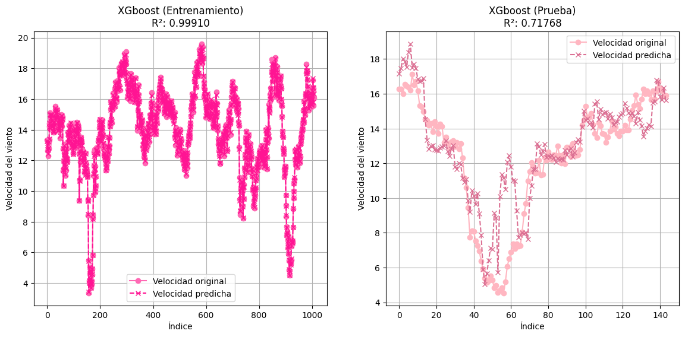
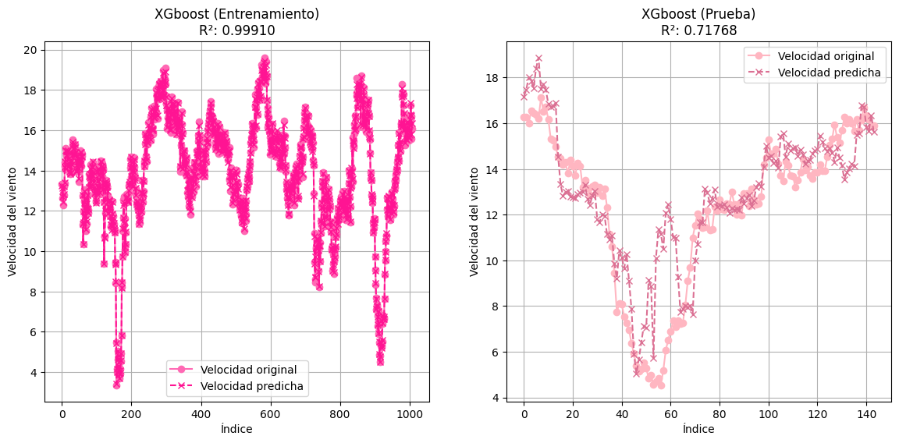
---------------------------------------------------------------------------
TypeError Traceback (most recent call last)
Cell In[77], line 2
1 for i in range(7):
----> 2 plt = grafica(mejores[i][0], mejores[i][1], mejores[i][2], mejores[i][3], mejores[i][4])
3 plt.show()
TypeError: 'NoneType' object is not subscriptable
Modelo 2: Wind speed 100 metros (Sensor 2)#
Modelos usando ventanas de predicción#
X2 = data.drop(columns=['Fecha', 'VelViento100m_1', 'VelViento100m_2', 'VelViento80m_1', 'VelViento80m_2', 'VelViento60m', 'DirViento80m', 'DirViento60m'])
y2 = data['VelViento100m_2']
tabla, mejores = evaluar_modelos(X2, y2)
tabla
| Modelo | MAPE | RMSE | R^2 | Ljung-Box p-value | Jarque-Bera p-value | |
|---|---|---|---|---|---|---|
| 61 | Random Forest | 13.948897 | 1.743095 | 0.742372 | 5.265379e-65 | 4.671781e-10 |
| 56 | Regresión K-NN | 17.236783 | 2.132634 | 0.614360 | 1.303018e-91 | 2.569998e-21 |
| 45 | Regresión Lasso | 4.015628 | 0.837644 | 0.766706 | 3.595775e-67 | 1.734285e-01 |
| 43 | Regresión Lineal | 3.996092 | 0.830596 | 0.770615 | 1.214976e-63 | 1.987139e-01 |
| 44 | Regresión Ridge | 3.996013 | 0.832460 | 0.769584 | 7.349954e-65 | 1.915789e-01 |
| 60 | Tree Decision | 16.090168 | 2.048057 | 0.644341 | 7.250496e-39 | 1.956860e-05 |
| 62 | XGboost | 14.675502 | 1.750468 | 0.740189 | 2.246286e-64 | 6.108926e-08 |
Gráficas de los modelos#
for i in range(7):
plt = grafica(mejores[i][0], mejores[i][1], mejores[i][2], mejores[i][3], mejores[i][4])
plt.show()

 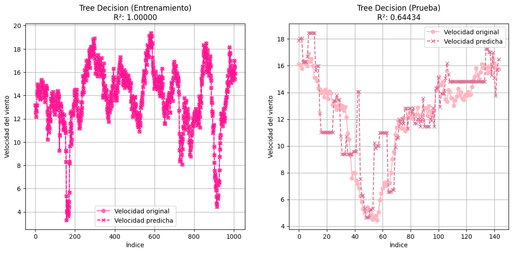
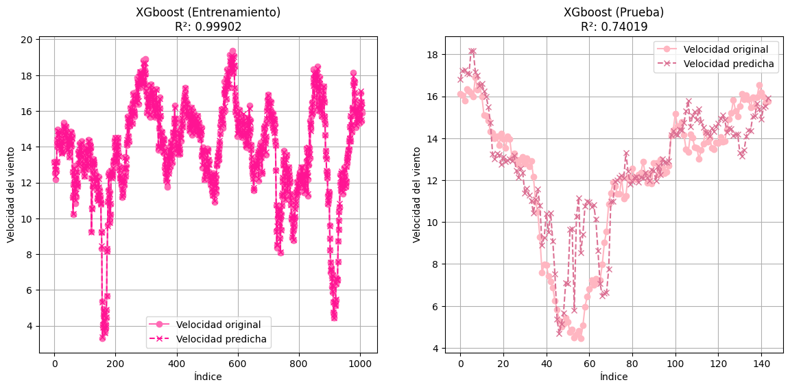
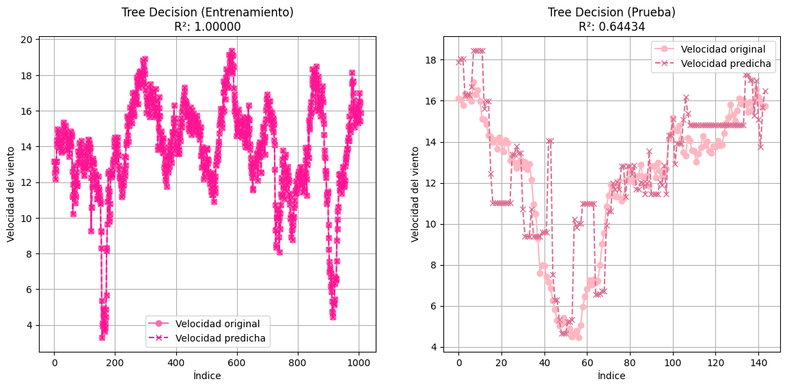
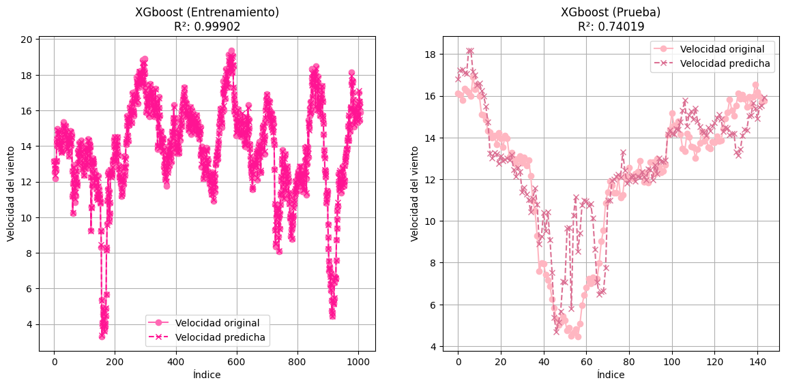
La gráfica muestra el desempeño del modelo de Regresión K-NN para la predicción de la velocidad del viento, comparando el conjunto de entrenamiento (izquierda) con el de prueba (derecha). En el conjunto de entrenamiento, el modelo presenta un R² de 0.87554, indicando un buen ajuste, ya que las predicciones (cruces) siguen de cerca los valores reales (puntos). Sin embargo, este alto rendimiento puede ser un signo de sobreajuste, dado que K-NN es muy sensible a los datos de entrenamiento. Por otro lado, en el conjunto de prueba, el rendimiento del modelo es significativamente menor, con un R² de 0.51771. Aunque las predicciones aún siguen las tendencias generales, hay mayor variabilidad y errores en comparación con los valores reales, lo que refuerza la posibilidad de sobreajuste. En resumen, aunque el modelo se ajusta bien a los datos de entrenamiento, su capacidad para generalizar a nuevos datos es limitada, lo que se refleja en su menor rendimiento en el conjunto de prueba.
Modelo 3: Wind speed 80 metros (Sensor 1)#
X3 = data.drop(columns=['Fecha', 'VelViento100m_1', 'VelViento100m_2', 'VelViento80m_1', 'VelViento80m_2', 'VelViento60m', 'DirViento100m', 'DirViento60m'])
y3 = data['VelViento80m_1']
Modelos usando ventanas de predicción#
tabla, mejores = evaluar_modelos(X3, y3)
tabla
| Modelo | MAPE | RMSE | R^2 | Ljung-Box p-value | Jarque-Bera p-value | |
|---|---|---|---|---|---|---|
| 194 | Random Forest | 6.214552 | 1.099491 | 0.033025 | 1.392043e-58 | 9.073786e-01 |
| 42 | Regresión K-NN | 6.751773 | 1.363591 | 0.369181 | 1.042822e-32 | 1.041046e-04 |
| 45 | Regresión Lasso | 4.232337 | 0.872895 | 0.741500 | 5.655773e-63 | 2.699373e-01 |
| 43 | Regresión Lineal | 4.219102 | 0.864644 | 0.746364 | 9.800919e-60 | 3.753386e-01 |
| 44 | Regresión Ridge | 4.214576 | 0.866600 | 0.745215 | 8.855226e-61 | 3.396947e-01 |
| 46 | Tree Decision | 7.219316 | 1.496871 | 0.239839 | 7.911801e-36 | 1.650671e-02 |
| 48 | XGboost | 6.541622 | 1.372894 | 0.360544 | 1.983742e-53 | 7.028256e-08 |
Gráficas de los modelos#
for i in range(7):
plt = grafica(mejores[i][0], mejores[i][1], mejores[i][2], mejores[i][3], mejores[i][4])
plt.show()


Modelo 4: Wind speed 80 metros (Sensor 2)#
X4 = data.drop(columns=['Fecha', 'VelViento100m_1', 'VelViento100m_2', 'VelViento80m_1', 'VelViento80m_2', 'VelViento60m', 'DirViento100m', 'DirViento60m'])
y4 = data['VelViento80m_2']
Modelos usando ventanas de predicción#
tabla, mejores = evaluar_modelos(X4, y4)
tabla
| Modelo | MAPE | RMSE | R^2 | Ljung-Box p-value | Jarque-Bera p-value | |
|---|---|---|---|---|---|---|
| 61 | Random Forest | 15.810715 | 1.841094 | 0.688398 | 1.086024e-84 | 7.586783e-07 |
| 56 | Regresión K-NN | 18.426858 | 2.188725 | 0.559617 | 8.866552e-94 | 2.568404e-10 |
| 45 | Regresión Lasso | 4.206182 | 0.865905 | 0.744455 | 4.384785e-63 | 2.530800e-01 |
| 43 | Regresión Lineal | 4.203377 | 0.857570 | 0.749351 | 7.246420e-60 | 3.441812e-01 |
| 44 | Regresión Ridge | 4.196624 | 0.859552 | 0.748190 | 6.662610e-61 | 3.141458e-01 |
| 60 | Tree Decision | 19.019657 | 2.294240 | 0.516133 | 9.211714e-55 | 1.204766e-15 |
| 62 | XGboost | 15.513360 | 1.862407 | 0.681142 | 3.387343e-69 | 7.055606e-09 |
Gráficas de los modelos#
for i in range(7):
plt = grafica(mejores[i][0], mejores[i][1], mejores[i][2], mejores[i][3], mejores[i][4])
plt.show()

 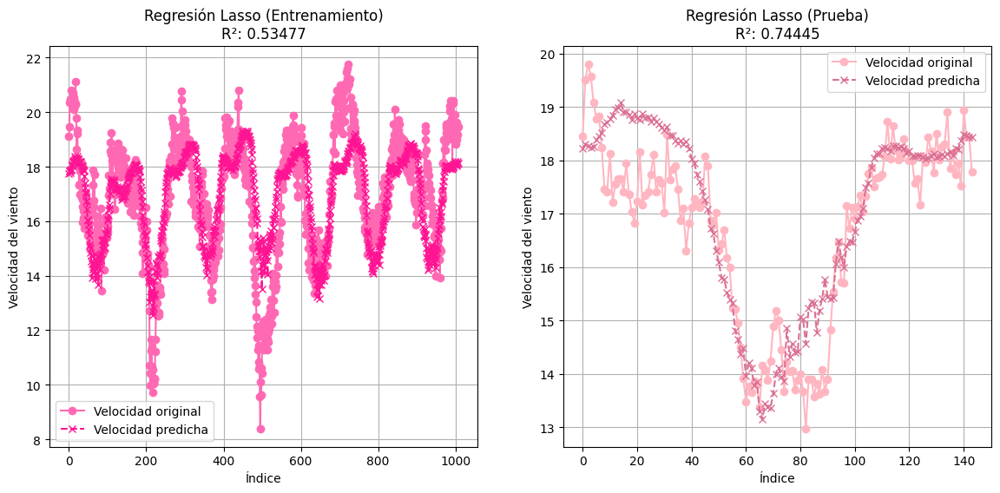
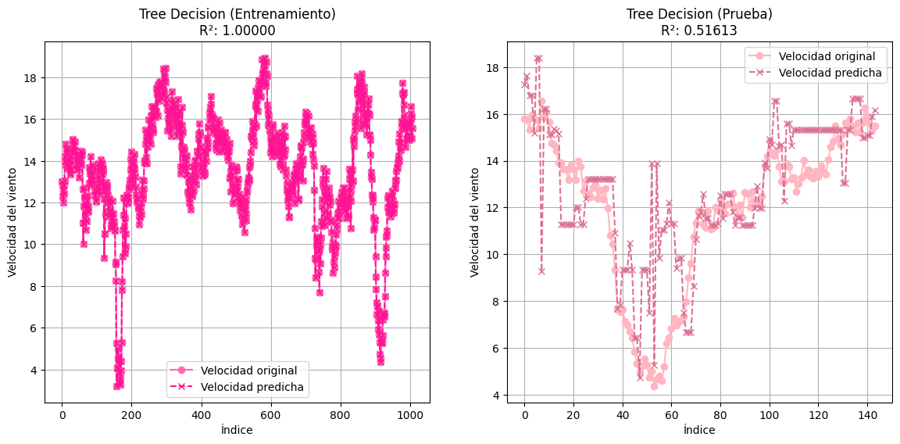
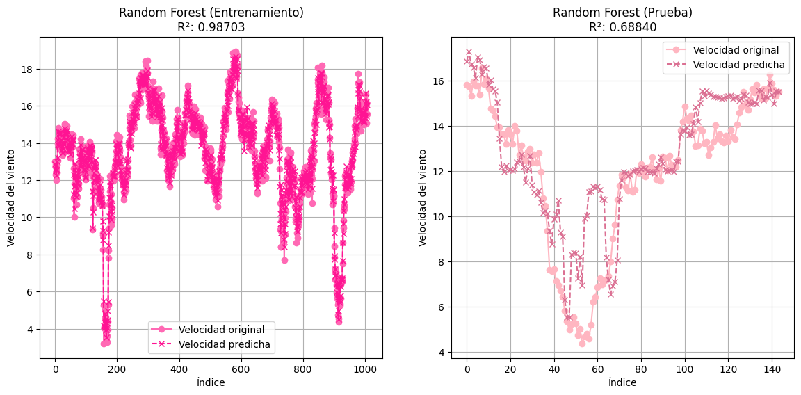
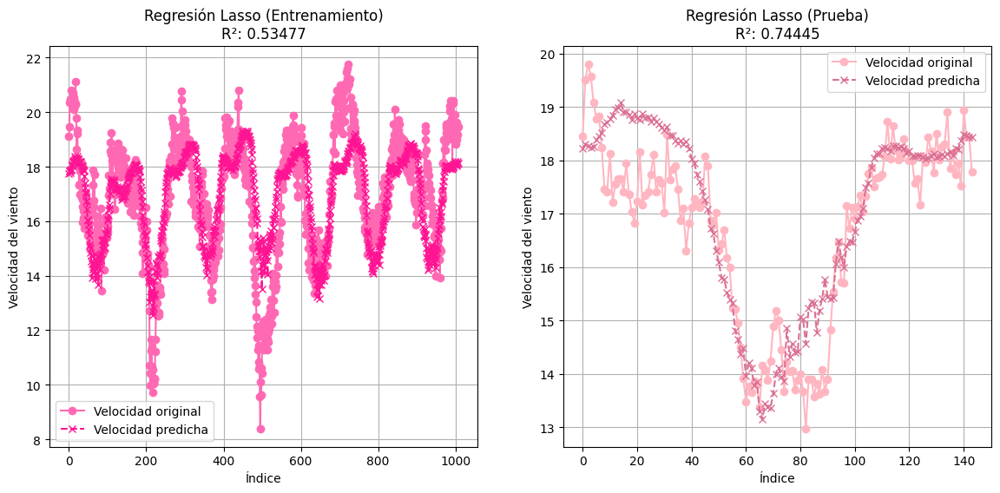
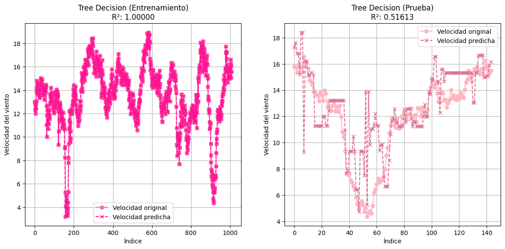
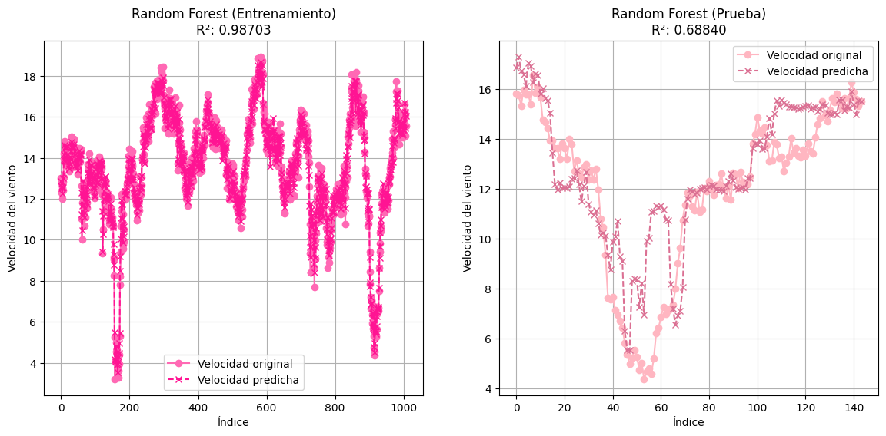

Modelo 5: Wind speed 60 metros#
X5 = data.drop(columns=['Fecha', 'VelViento100m_1', 'VelViento100m_2', 'VelViento80m_1', 'VelViento80m_2', 'VelViento60m', 'DirViento80m', 'DirViento100m'])
y5 = data['VelViento60m']
Modelos usando ventanas de predicción#
tabla, mejores = evaluar_modelos(X5, y5)
tabla
| Modelo | MAPE | RMSE | R^2 | Ljung-Box p-value | Jarque-Bera p-value | |
|---|---|---|---|---|---|---|
| 61 | Random Forest | 16.545232 | 1.908646 | 0.633686 | 1.875899e-79 | 3.684872e-07 |
| 56 | Regresión K-NN | 19.725898 | 2.268929 | 0.482339 | 8.588551e-94 | 3.717309e-15 |
| 45 | Regresión Lasso | 4.445535 | 0.890562 | 0.709324 | 8.948713e-59 | 3.340703e-01 |
| 43 | Regresión Lineal | 4.439774 | 0.880800 | 0.715661 | 1.000130e-55 | 4.692246e-01 |
| 44 | Regresión Ridge | 4.436869 | 0.882914 | 0.714294 | 1.275099e-56 | 4.269807e-01 |
| 207 | Tree Decision | 18.350041 | 2.455425 | 0.393743 | 1.886983e-11 | 2.763144e-03 |
| 62 | XGboost | 14.825169 | 1.778782 | 0.681838 | 1.067667e-62 | 2.030054e-10 |
Gráfica de los modelos#
for i in range(7):
plt = grafica(mejores[i][0], mejores[i][1], mejores[i][2], mejores[i][3], mejores[i][4])
plt.show()
---------------------------------------------------------------------------
IndexError Traceback (most recent call last)
Cell In[67], line 2
1 for i in range(7):
----> 2 plt = grafica(mejores[i][0], mejores[i][1], mejores[i][2], mejores[i][3], mejores[i][4], mejores[i][5])
3 plt.show()
IndexError: list index out of range
Las gráficas que acompañan el análisis de los modelos de predicción de la velocidad del viento a 60 metros revelan varias observaciones clave. En el caso de la Regresión K-NN, el modelo muestra un buen ajuste en el entrenamiento con un R² de 0.85224, pero cae significativamente en la prueba, con un R² de 0.34968, indicando sobreajuste y mala generalización. La Regresión Lineal presenta un R² de 0.52999 en el entrenamiento y mejora en la prueba con un R² de 0.71566, capturando patrones más precisos. La Regresión Ridge muestra un comportamiento similar, con un R² de 0.52978 en el entrenamiento y un R² de 0.71429 en la prueba, confirmando su buen rendimiento. Por su parte, la Regresión Lasso tiene un R² de 0.52788 en el entrenamiento y un R² de 0.70930 en la prueba, siendo competitivo pero ligeramente inferior a los modelos Lineal y Ridge. En conclusión, los modelos lineales, especialmente la Regresión Lineal, Ridge y Lasso, ofrecen un mejor balance entre ajuste y generalización, con R² superiores a 0.70 en los datos de prueba, mientras que K-NN muestra un claro sobreajuste, siendo el menos adecuado para este caso.
Conclusión#
Los modelos lineales (Regresión Lineal, Ridge y Lasso) demuestran ser los más apropiados para predecir la velocidad del viento en los diferentes sensores y alturas. Logran un equilibrio entre un ajuste adecuado en los datos de entrenamiento y una buena capacidad de generalización en los datos de prueba. Por otro lado, K-NN, a pesar de su alto rendimiento en entrenamiento, no es adecuado para esta tarea debido a su tendencia a sobreajustarse y su baja capacidad de generalización. Para futuros análisis, esperamos utilizar modelos específicos para series de tiempo y así ver mejor el comportamiento de nuestro conjunto de datos.